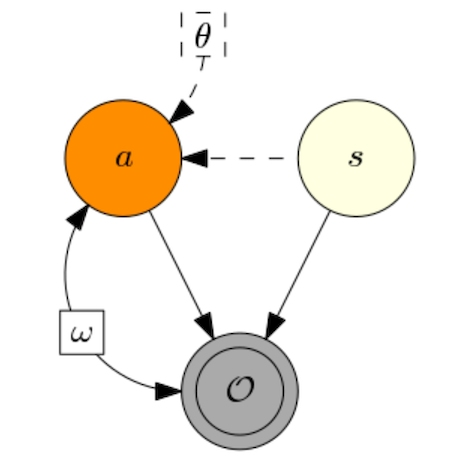

Learning to Interpret, Automate, and Rely on Machines
LiaRom

09 Jun 2020

08 Jun 2020

06 Jun 2020

06 Jun 2020

|
07/2020: "Capsule Networks: A Generative Probabilistic Perspective" (Lewis Smith, Lisa Schut, Yarin Gal, Mark van der Wilk). |
|  | 06/2020: "Invariant Causal Prediction for Block MDPs" (Amy Zhang, Clare Lyle, Shagun Sodhani, Angelos Filos, Marta Kwiatkowska, Joelle Pineau, Yarin Gal, Doina Precup). |

|
06/2020: "Uncertainty Estimation Using a Single Deep Deterministic Neural Network" (Joost van Amersfoort, Lewis Smith, Yee Whye Teh, Yarin Gal). |

|
|
10 Jul 2020: Are capsules a good idea? A generative perspective (Lewis Smith) |

|
10 Jul 2020: 13 LiaRom Conference and Workshop papers at ICML 2020 (Angelos Filos, Sebastian Farquhar, Tim G. J. Rudner, Lewis Smith, Lisa Schut, Tom Rainforth, Panagiotis Tigas, Pascal Notin, Andreas Kirsch, Clare Lyle, Joost van Amersfoort, Jishnu Mukhoti, Yarin Gal) |

|
09 Jul 2020: Can Autonomous Vehicles Identify, Recover From, and Adapt to Distribution Shifts? (Angelos Filos, Panagiotis Tigas, Rowan McAllister, Nicholas Rhinehart, Sergey Levine, Yarin Gal) |

|
13 May 2020: A Guide to Writing the NeurIPS Impact Statement (Carolyn Ashurst, Markus Anderljung, Carina Prunkl, Jan Leike, Yarin Gal, Toby Shevlane, Allan Dafoe) |